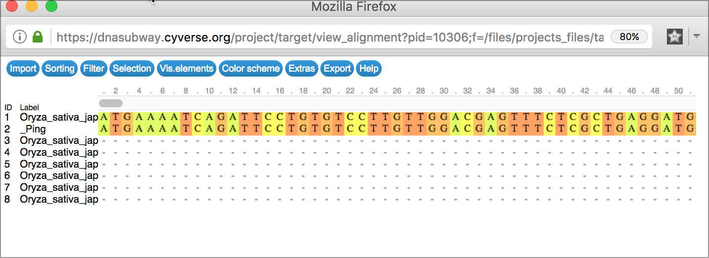

Walkthrough of DNA Subway Yellow Line - Sequence Detection¶
Genome prospecting uses a query sequence (DNA or protein of up to 10,000 base pairs/amino acids) to find related sequences in specific genomes or in a database. A major purpose of genome prospecting is to identify members of gene or transposon families. DNA Subway uses the TARGeT workflow, which integrates BLAST searches, multiple sequence alignments, and tree-drawing utilities. Yellow line uses TARGeT (Tree Analysis of Related Genes and Transposons) uses either a DNA or amino acid 'seed' query to: (i) automatically identify and retrieve gene family homologs from a genomic database, (ii) characterize gene structure and (iii) perform phylogenetic analysis. Due to its high speed, TARGeT is also able to characterize very large gene families, including transposable elements (TEs). [citation]
Some things to remember about the platform
- Yellow Line will return sequences that would normally be excluded from a BLAST search of a genome (e.g. repetitive sequences, transposons).
- Yellow Line is implemented only for plant genomes
DNA Subway Yellow Line - Create a Yellow Line Project¶
- Log-in to DNA Subway - unregistered users may 'Enter as Guest'
- Click 'Prospect Genomes using TARGeT' (Yellow Square)
-
Select a sample sequence, or paste in a sequence to search for.
Note
DNA Subway Yellow Line is only implemented to search a limited set of plant genomes.
-
Provide your project with a title, then Click 'Continue'
Example Exercise - Project Creation: mPing Mite element to search plant genomes for an active transposon¶
The mPing MITE element is an example of an active transposon in rice. Transposons are a major class of DNA elements that impact the function of the genome.
- Create a Yellow Line project following the steps above and using the mPing Mite Element (Oryza sativa/Rice)
DNA Subway Yellow Line - Search Plant Genomes with TARGeT¶
- Click and select the genome(s) you wish to search and the click; 'Run' to search those genomes.
- Click the 'Alignment Viewer' button to view the results of the search as a multiple alignment.
- Click the 'Tree Viewer' button to view a tree that will group results by similarity.
Viewer Tips
Alignment Viewer Generates an alignment of all search results  Tree Viewer Displays the results of sequence matches as a tree, grouped by sequence similarity yellow_tree
{kind=link}
Useful Definitions
- Transposons (DNA, Retroviral, LINES): Genetic elements which have the ability to be amplified and redistributed within a genome.
- Non-autonomous transposons: Transposons which lack an active transposase gene, thus requiring help from another transposon to move.
- Autonomous transposons: Transposons which have a functional transposase and can move within the genome.
Example Exercise - Search Plant Genomes: mPing Mite element¶
- After loading the mPing Mite Element as the query, search the Oryza Sativa genome, and examine the results in the Alignment and Tree Viewers.
- Repeat this analysis with a new project using the Ping transposase gene and the Ping Transposase protein.
Fix or improve this documentation
- Search for an answer: CyVerse Learning Center
- Ask us for help: click the Intercom icon
 on the lower right-hand side of the page
on the lower right-hand side of the page - Report an issue or submit a change: Github Repo
- Send feedback: learning@CyVerse.org